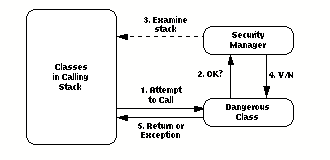
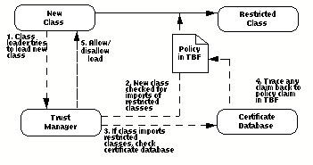
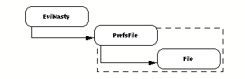
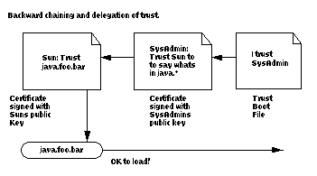

Using the EC Trust Manager to Secure Java
An White Paper Electric Communities has designed and implemented a capability-based security infrastructure for certificates that goes far beyond simple digital signatures. Applying EC's Trust Manager to Java provides a powerful and extensible semantics that lets users specify and enforce highly complex trust relationships governing the load-time behavior of Java classes--class importing, subclassing of other classes, and package membership. Adapting the Trust Manager to Java required only a few changes to the Java runtime; for example, adding it to the standard Sun distribution requires changes to only one source file. EC's Trust Manager was customized to Java as part of the E programming language effort, but it also is a stand-alone product that can be added to any licensed Java implementation.
Java(TM), Sun Microsystems' platform-independent programming language and runtime environment, has taken the computing community by storm. Initial distributions of the language runtime allow some user control over the delegation of trust to Java classes, but developers of distributed applications have expressed the need for a more flexible and powerful security model. Javasoft, Microsoft, and other vendors have announced plans to implement digital signatures for Java classes, based on the techniques of public-key cryptography, that address part of the security picture for distributed applications.
Electric Communities' Trust Manager (ECTM) is a security framework that propagates trust through security policies composed from mutually suspicious sources. This allows the revocable delegation of domain-specific powers to trusted agencies (such as a company MIS department or network system administrator) as represented by their digital public keys. This framework is specialized by adding code defining the kinds of operations needing authorization in a given domain, and intercepting these operations so the Trust Manager can calculate whether they should be allowed.
Electric Communities has provided a Java-specific implementation of the ECTM that solves several security issues in the Java Language, including issues highlighted by the Java Security Manager and signed classes. This customized ECTM, called ECTM/J, is a tool that lets the user make and enforce assertions controlling:
This white paper outlines the differences between the initial Java security model and EC's Trust Manager for Java, presents the mechanism used by ECTM/J to enforce users' security preferences, and illustrates the power and flexibility of the ECTM security mechanism.
- The ability of Java classes to import other classes.
- The ability of Java classes to subclass other classes.
- Membership of Java classes in particular packages.
Security in Current Java Releases
A number of companies are pursuing the development of security enhancements to Java. In this white paper, we compare our Trust Manager only to the version of Java currently in release.
The security model for the current release of Java works as follows:
There are some limits to the flexibility and extensibility of this model:
- Classes that can potentially damage the user's system, such as writing arbitrarily to the hard disk, are designated by their authors as "dangerous". Calling classes not designated "dangerous" is always allowed.
- In each dangerous method of a dangerous class, the author must include calls to Java's Security manager, asking it to check the context in which the call is made.
- The Security Manager examines the current execution stack and evaluates each class as "trusted" or "untrusted". In general, classes residing on the user's hard disk are regarded as trusted; classes originating from elsewhere on the network may be considered trusted or untrusted based on a user-configurable default.
FIGURE 1. Security in the initial Java release. Classes designated dangerous know hot wo query the Java Security Manager when called. The Security Manager examines the stack for that call; if any untrusted class is in the calling stack, the call is disallowed.
 - The Security Manager reports to the dangerous class whether any untrusted classes exist in the calling stack.
- If any class in the current calling stack is considered "untrusted," the call to the dangerous class is disallowed and signals an exception. If not, the call proceeds.
- Both the dangerous class and the class attempting to call it must already be loaded before the Security Manager is called.
- To be considered "dangerous," a class must be coded as such by its author. Every dangerous method in the dangerous class has to contain a call to the Security Manager for verification. All such checking is done at run-time, which creates significant execution overhead.
- The Security Manager needs to be rewritten to accommodate any new dangerous operations that are introduced; the new Security Manager then needs to be distributed to everyone wishing to use these new operations.
- If a call to a dangerous class is made by an innocuous "trusted" class, but that trusted class was called by an untrusted class, the call is still disallowed.
- The addition of digital signatures allows previously "untrusted" classes to be considered "trusted" because they come signed by a reputable source.
Security with EC's Trust Manager for Java
Javasoft has lately been speaking of sandboxing, and this seems to have created a bit of confusion. Sandboxing is not a proposed alternative to the above mechanisms, but a description of how they expect the above mechanisms to be used.
ECTM/J works by modifying the Java Class Loader which, like the Java Security Manager, is a part of the Java runtime. Restricted classes are defined by the user in policy certificates (described in the next section) that specify any restrictions on importing those classes.
This capability infrastructure lets the outside world access restricted classes via "safe" intermediary classes that present only a subset of its functions. For example, the File class could be "wrapped" by a class that uses File only to create a single temporary file of limited length. This latter class, associated with a signed statement, can be presented freely to the outside world because there's no way an abnormal or hostile class could use it to do damage.
- When an attempt is made to load a new class, the Class Loader invokes the Trust Manager.
- The Trust Manager examines the new class to see which classes in imports.
- The Trust Manager consults the policy in the TBF to see which classes are restricted.
- If the new class contains references to restricted classes, the Trust Manager consults the certificate database for policy statements giving the loading class permission to import the restricted class. These certificates must in turn by authorized by policy statements in the TBF concerning them, or by other certificates whose authorization then needs to be checked. This can be an iterative process; the claim is traced back to the TBF through any number of certificates found in the database or through hints leading to other URLs.
FIGURE 2. Secrity with EC's Trust Manager for Java. The system's Trust Boot File (TBF) outlines policy specifying which classes are restricted and under what circumstances they are allowed to be imported. At load time, every class is checked by the Trust Manager for imports of any restricted classes. If there are none, the class is loaded and is free to execute. If the class does import restricted classes, certificates are then checked to see if any chain authorizes that class to import the restricted class. If not, the load of the importing class fails.
 - If the class has been granted all the powers it needs to import the classes it needs, it is allowed to load and run. If not, the load is disallowed and an exception is signaled.
FIGURE 3. Wrapping a restricted class with a harmless one. The "wrapper" class PrefsFile can call the restricted class File, but only to create a single temporary file of limited length. The ability to load and call PrefsFile can then be given out freely, even to an EvilNasty class, because there's no way to use it to get at the more destructive capabilities of File.
 The Structure of Policy
System policy is based on a file on the user's hard disk called the Trust Boot File (TBF). The Trust Boot File contains certificates that grant powers to classes or signature public keys. The signature public keys represent others such as a company MIS department, Java class vendor, or network system administrator, to whom the user might delegate certification authority.
Certificates make assertions of the following forms:
Certificates in the Trust Boot File are administered by the user with an interactive tool called the Policy Blesser. The Trust Boot File contains the minimum number of trusted public keys and certificates needed to bootstrap the certification process. It also contains "hints", which are URLs telling the Trust Manager where to find additional certificates on the network. For example, the TBF might contain the public key for the company's MIS department, and the URL for obtaining the company's policy certificates from the MIS department's server. These external certificates must be signed by the key contained in the TBF to be accepted as valid. Keys provided in those verified certificates can then be used in turn to locate and verify additional trusted public keys.
- Class PrefsFile is allowed to import class File.
- Key Donald can authorize classes to import class File.
- Key Mary can authorize classes to subclass class File.
- Key Donald can authorize others to in turn authorize classes to import class File.
- Class PrefsFile belongs to package foo.bar.baz.
EC's Trust Manager for Java simplifies security concerns for the user by enabling delegation of trust. A corporate user can specify in the Trust Boot File that any certificate signed by the public key of the company's MIS department is to be trusted. The MIS department can further delegate some of that trust to the public keys of Sun, Microsoft, or other vendors of Java classes.
FIGURE 4. Backward chaining and delegation of trust.
 Benefits of ECTM/J
The EC Trust Manager for Java has a number of beneficial features:
- Our Trust Manager and Loader judge the safety of a class before it is loaded, unlike the existing Java Security Manager. Since checking is at load time rather than runtime, security overhead is significantly reduced.
- The modifications made to the source file classloader.cin the Java runtime are minimal. You only need to add the hooks which invoke certificate checking before loading a class. It will not be difficult for any Java implementer to modify their classloader to utilize ECTM/J, making integration cheap and easy.
- Rather than making assumptions about the trustworthiness of a class based on whether it came from the user's hard disk or over the network, ECTM/J only cares about what signed certificates grant what powers to the file. This enables faster and more convenient updates for published classes and tighter security for classes obtained by means other than the network.
- EC's Trust Manager for Java provides decentralized checking and verification instead of centralizing checking in the restricted class. There is no requirement that the creator of a restricted class recognize it as dangerous and code in calls to the Java Security Manager. Using ECTM/J, the user can "redeclare" a class as restricted without the author of the class having to rewrite it.
- Vendors of Java classes can distribute these classes via insecure channels without fear of their being replaced or corrupted. ECTM/J's package-membership certification provides authentication equivalent to signed classes as well as the certificates governing the use of those classes.
A Word About E
Electric Communities' Trust Manager for Java can be incorporated easily and cheaply into any licensed Java implementation with a minimum of modifications to the Java runtime. However, it was originally developed as part of the E programming language.E is an object-oriented programming language designed for writing distributed applications including databases, groupware, publishing systems, multimedia, and games. E is a superset of Sun Microsystems' Java and builds upon the Java Virtual Machine. E classes are very similar to Java classes, and the two can coexist in the same program. However, an E-object responds only to messages sent by other objects, rather than using the traditional call/return semantics of Java methods. When an E-object receives a message, it executes an associated E-method that defines what to do when the class receives that message.
E provides some powerful enhancements to Java, including:
Electric Communities
- Distributed communication. E features a built-in model for remote object communications, allowing an object to send messages directly to objects that exist in other machines.
- Capability semantics. E offers a sophisticated security model that allows convenient but extremely detailed control over sensitive functions within a single machine or across a network.
- Optimistic computation. E implements a powerful method for reducing the effect of communications latency in distributed systems.
10101 N. De Anza Boulevard, Suite 100
Cupertino, CA 95014
408.342.9500
408.342.9200 faxelectric@communities.com
http://www.communities.com/Electric Communities and the E logo are trademarks of Electric Communities. Use of the E logo for commercial purposes without the prior written consent of Electric Communities may constitute trademark infringement and unfair competition in violation of federal and state laws.
This document is copyrighted by Electric Communities with all rights reserved worldwide. Under copyright laws, this document may not be copied, in whole or in part, without the written consent of Electric Communities. Under the law, copying includes translating into another language.
Java(TM), and HotJava(TM) are trademarks of Sun Microsystems, Inc.